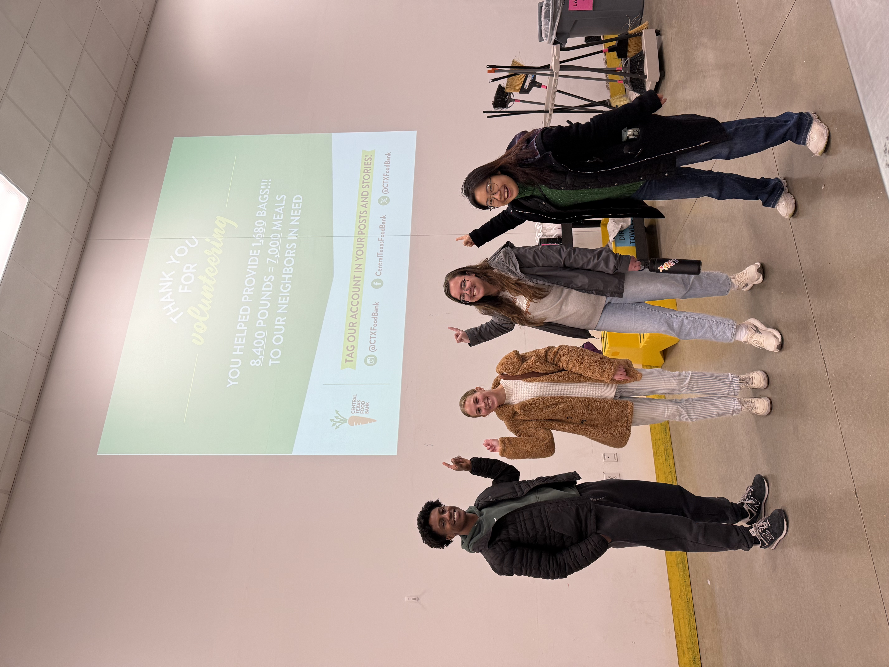
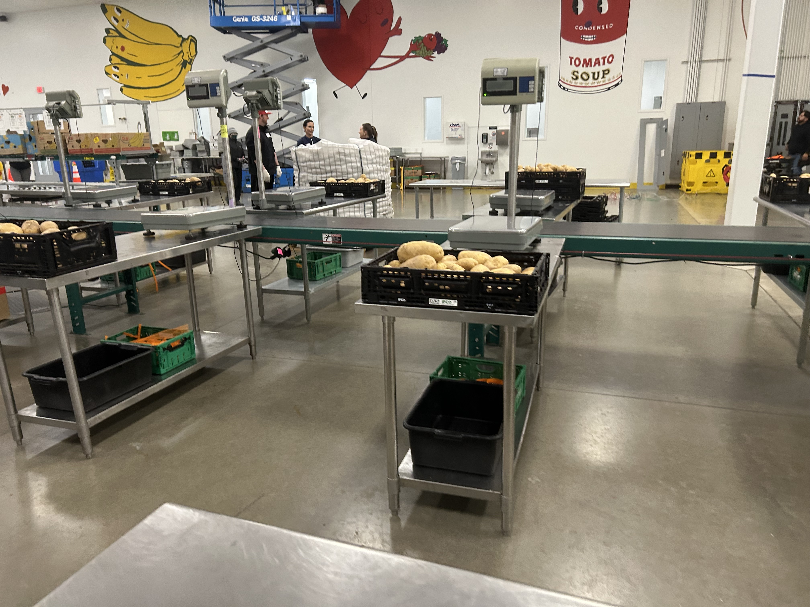
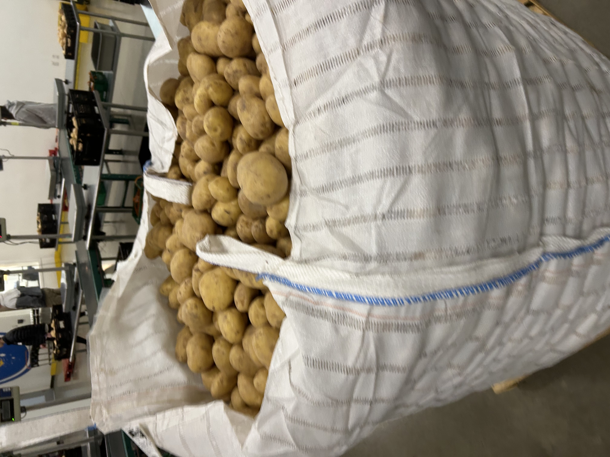

Research in Austin
To explore our questions, we engaged in service learning opportunities across Austin and interviewed people engaged in different points within the Travis County Food System. Our research was grouped in 3 cycles we will cover.
Cycle 1
To begin this cycle, we got an in-depth understanding of how food moves from farm to table in Travis county through the Austin Travis County Food Plan. We met with Amanda Rolich, current staff liaison in the Office of Sustainability for the Austin Travis County Food Policy Board. In our meeting, we discovered that [FINISH]
Our first stops were Deep Eddy and Conley-Geurrero Senior Activity Center, it was a cold day and we were met by fences and nobody there. We walked around the outside and saw that the garden was well maintained, there were tarps over some of the vegetation and seats outside for volunteers or workers although currently nobody was there. This was our first big lesson in access to green spaces, since this site has certain hours where people can visit and interact with the greenery, this limits how community members can interact with the garden.


Next, we visited the Conley-Geurrero Senior Activity Center in east Austin. The center has a small garden that serves as a community space for the seniors. We were taken on an impromptu tour by [NAME]. We learned that the garden is in constant need of volunteers, although seniors engage and help maintain the vegetation, currently only [NAME] helps full time. She also informed us that the church [NAME] is a large source of funding for the center, and they want to expand their current green spaces once they acquire more funds.


Also during this cycle, Aaron visited the Muller Farmers Market, located outside downtown Austin. He saw the interactions between customers and producers and connected these ideas to the previously discussed food system. He saw that most items were expensive, and consumers only bought one or two things from the different stands. Overall, he assessed that farmers markets were a great way for small scale producers to reach their audience, however, pricing issues may make it difficult for the greater public to buy their products.
[Mia Interview]. Following our interview we headed to the Central Texas Food Bank. Here, we learned that at grocery markets in the United States, the look of the produce matters a lot and if they do not match certain aesthetics they are discarded. However, at the food bank, they will use all produce as long as it is safe to consume. We helped process potatoes from start to finish, from assessing the quality, to the packaging.
  During this cycle, we began to see how social and political forces impact urban agriculture spaces. The Austin Food Policy Board has meetings open to the public and they engage with a lot of organizations in Central Texas. As land loss and funding are current issues for green initiatives in Travis County, new incubator farms and community gardens continue to rise to combat these problems. Finally, we noticed that accessibility is a large topic for urban gardens. Some community gardens we visited did not appear to be open to the community or were fenced off. We wondered how this impacted community members’ perception of the spaces and how they interact with them.